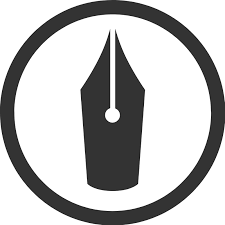

<!doctype html>
<html data-n-head-ssr>
  <head>
    <title>yacchi-portfolio</title><meta data-n-head="ssr" charset="utf-8"><meta data-n-head="ssr" name="viewport" content="width=device-width,initial-scale=1"><meta data-n-head="ssr" property="og:url" content="https://yacchidao.github.io/yacchi_portfolio/"><meta data-n-head="ssr" property="og:title" content="yacchi-portfolio"><meta data-n-head="ssr" property="og:image" content="/yacchi_portfolio/favicon.ico"><meta data-n-head="ssr" property="og:description" content="やっちのポートフォリオサイトです"><meta data-n-head="ssr" data-hid="description" name="description" content="やっちのポートフォリオサイトです"><meta data-n-head="ssr" name="twitter:card" content="summary"><meta data-n-head="ssr" name="twitter:site" content="@yacchi_otaku"><meta data-n-head="ssr" property="og:description" content="やっちのポートフォリオサイトです"><link data-n-head="ssr" rel="icon" type="image/x-icon" href="/yacchi_portfolio/favicon.ico"><base href="/yacchi_portfolio/"><link rel="preload" href="/yacchi_portfolio/_nuxt/2cdfc455c3c7d6e8baf5.js" as="script"><link rel="preload" href="/yacchi_portfolio/_nuxt/a4a698ea7f32ac968074.js" as="script"><link rel="preload" href="/yacchi_portfolio/_nuxt/9d643bef61be47deaf2f.js" as="script"><link rel="preload" href="/yacchi_portfolio/_nuxt/bd57399a1b82b628f4ad.js" as="script"><style data-vue-ssr-id="3a312388:0 e622d370:0 3191d5ad:0 932a8f60:0">abbr,address,article,aside,audio,b,blockquote,body,canvas,caption,cite,code,dd,del,details,dfn,div,dl,dt,em,fieldset,figcaption,figure,footer,form,h1,h2,h3,h4,h5,h6,header,hgroup,html,i,iframe,img,ins,kbd,label,legend,li,mark,menu,nav,object,ol,p,pre,q,samp,section,small,span,strong,sub,summary,sup,table,tbody,td,tfoot,th,thead,time,tr,ul,var,video{margin:0;padding:0;border:0;outline:0;font-size:100%;vertical-align:baseline;background:0 0}body{line-height:1}article,aside,details,figcaption,figure,footer,header,hgroup,menu,nav,section{display:block}nav ul{list-style:none}blockquote,q{quotes:none}blockquote:after,blockquote:before,q:after,q:before{content:"";content:none}a{margin:0;padding:0;font-size:100%;vertical-align:baseline;background:0 0}ins{text-decoration:none}ins,mark{background-color:#ff9;color:#000}mark{font-style:italic;font-weight:700}del{text-decoration:line-through}abbr[title],dfn[title]{border-bottom:1px dotted;cursor:help}table{border-collapse:collapse;border-spacing:0}hr{display:block;height:1px;border:0;border-top:1px solid #ccc;margin:1em 0;padding:0}input,select{vertical-align:middle}*,:after,:before{-o-box-sizing:border-box;-ms-box-sizing:border-box;box-sizing:border-box}body{font-family:ヒラギノ角ゴ Pro W3,Hiragino Kaku Gothic Pro,游ゴシック Medium,Yu Gothic Medium,游ゴシック体,YuGothic,メイリオ,Meiryo,Osaka,ＭＳ Ｐゴシック,MS PGothic,sans-serif;color:#333;font-size:15px;line-height:1.8;letter-spacing:.8px;word-break:break-all}a{color:#08088a;text-decoration:none}a:hover,a:hover img{opacity:.8;transition:all .3s}img,object,video{max-width:100%;height:auto;border:none;vertical-align:bottom;display:block}li,ul{list-style:none}.main{background:linear-gradient(-135deg,#bdbdbd,#66cdaa)}#wrapper{background-color:#565656}.inner{max-width:1320px;width:100%;margin:0 auto;padding:0 10px}#contents{padding:100px 0}#header{display:flex;justify-content:center;-ms-align-items:center;align-items:center;height:550px}#header .logo{display:block}#header .logo-name{display:block;font-family:Amatic SC,cursive;font-size:32px;line-height:1;text-align:center;color:#757575;margin-bottom:5px}#header .logo-title{font-family:Cormorant Garamond,serif;font-size:88px;font-weight:400;color:#12aa77;line-height:1;letter-spacing:.1em}#header .logo-desc{font-family:ヒラギノ明朝 Pro,Hiragino Mincho Pro,游明朝体,Yu Mincho,YuMincho,MS P明朝,MS PMincho,serif;display:block;font-size:14px;letter-spacing:.2em;text-align:center;margin-top:10px}#gnav{padding:10px;font-family:Cormorant Garamond,serif;z-index:100}#gnav ul{display:flex;flex-wrap:wrap;justify-content:center}#gnav li{padding:0 30px}#gnav li a{font-weight:700;font-size:16px;color:#333;letter-spacing:.1em;text-transform:lowercase}#gnav.fixed{position:fixed;top:0;left:0;width:100%;background-color:#565656;box-shadow:0 6px 3px -3px rgba(0,0,0,.2);-webkit-box-shadow:0 6px 3px -3px rgba(0,0,0,.2);-moz-box-shadow:0 6px 3px -3px rgba(0,0,0,.2);transform:translateZ(0)}.section .inner{padding:80px 10px}.section .section-title-block{text-align:center;margin-bottom:30px}.section .section-title{font-family:cursive,cursive;text-transform:lowercase;letter-spacing:.2em;display:inline-block;font-size:36px;line-height:1;margin-bottom:10px;color:#0b6138}.section .section-desc{text-align:center;font-family:ヒラギノ角ゴ Std W8,sans-serif}.two-column-wrapper{width:80%;margin:0 auto;padding:20px 0;display:flex;flex-wrap:nowrap;justify-content:space-between}.two-column-image{width:33%}.two-column-image img{margin:0 auto}.two-column-desc{width:62%}#feature .two-column-desc,#feature .two-column-image{width:48%}#works .card{width:32%;margin-bottom:50px}#works .card-image{display:block;margin-bottom:8px}#works .card-caption-title{font-size:13px;font-weight:700}#works .card-caption-info{font-size:12px}#works .card-caption-url{font-size:10px}#works .card-wrapper{padding:20px 0;display:flex;flex-wrap:wrap;justify-content:space-between}#about .two-column-image{width:33%}#about .two-column-desc{width:62%}#skill .card-wrapper{width:80%;margin:0 auto;padding:20px 0;flex-wrap:wrap}#skill .card,#skill .card-wrapper{display:flex;justify-content:space-between}#skill .card{flex-basis:46%;margin-bottom:50px;flex-wrap:nowrap}#skill .card:first-child{flex-basis:100%}#skill .skill-icon{flex-basis:75px}#skill .skill-icon img{width:75px}#skill .skill-desc{flex-basis:calc(100% - 105px)}#skill .skill-desc-title{margin-bottom:3px}#skill .rate{font-size:16px;position:relative;display:inline-block;width:100%;height:20px;letter-spacing:.3em}#skill .rate:after,#skill .rate:before{line-height:20px;position:absolute;top:0;left:0;display:inline-block;height:20px;content:"★★★★★"}#skill .rate:before{color:#ddd}#skill .rate:after{overflow:hidden;white-space:nowrap;color:#12aa77}#skill .rate1:after{width:20px}#skill .rate2:after{width:40px}#skill .rate3:after{width:60px}#skill .rate4:after{width:80px}#skill .rate5:after{width:100px}#contact .contact-list{padding:20px 0}#contact .contact-list ul{width:40%;margin:0 auto;display:flex;flex-wrap:wrap;justify-content:space-between;align-self:flex-end}#contact .contact-list li{text-align:center}#contact .contact-list li a{color:#333}#contact .contact-list li img{width:60px;margin:0 auto 5px}#contact .contact-list-desc{font-size:12px;font-weight:700}#footer{background-color:#565656}#footer .inner{padding:30px}#footer .footer-link ul{font-family:Cormorant Garamond,serif;letter-spacing:.1em;text-transform:lowercase;margin-bottom:30px;display:flex;flex-wrap:wrap;-moz-justify-content:center;justify-content:center}#footer .footer-link li{font-size:12px;padding:0 20px}#footer .footer-link li a{color:#fff;font-weight:700}#footer .copyright{font-size:10px;color:#8c8c8c;text-align:center}@media screen and (max-width:767px){body{font-size:13px;line-height:1.7}#header{height:60vh}#header .logo-title{font-size:40px}#header .logo-name{font-size:16px}#header .logo-desc{font-size:10px}#gnav li{padding:0 10px}#gnav li a{font-size:12px}#gnav li a:hover{opacity:1}#contents{padding:40px 0}.section .inner{padding:30px 15px}.section .section-title-block{margin-bottom:10px}.section .section-title{font-size:32px}#feature .two-column-wrapper{width:100%;flex-wrap:wrap}#feature .two-column-image{width:90%;margin:0 auto 20px}#feature .two-column-desc{width:100%}#works .card{width:48%}#works .card-caption-title{font-size:12px}#works .card-caption-info{font-size:11px}#about .two-column-wrapper{width:100%;flex-wrap:wrap}#about .two-column-image{width:50%;margin:0 auto 20px}#about .two-column-desc,#skill .card-wrapper{width:100%}#skill .card{flex-basis:100%}#skill .skill-icon{flex-basis:45px}#skill .skill-icon img{width:45px}#skill .skill-desc{flex-basis:calc(100% - 65px)}#skill .rate{height:15px;font-size:15px}#skill .rate:after,#skill .rate:before{height:15px;line-height:15px}#skill .rate1:after{width:15px}#skill .rate2:after{width:35px}#skill .rate3:after{width:55px}#skill .rate4:after{width:75px}#skill .rate5:after{width:95px}#contact .contact-list ul{width:100%}#contact .contact-list li{flex-basis:30%}#contact .contact-list li img{width:30px}#contact .contact-list-desc{font-size:12px}#footer .inner{padding:20px 0}#footer .footer-link li{font-size:10px;padding:0 10px;margin-bottom:5px}}.nuxt-progress{position:fixed;top:0;left:0;right:0;height:2px;width:0;opacity:1;transition:width .1s,opacity .4s;background-color:#fff;z-index:999999}.nuxt-progress.nuxt-progress-notransition{transition:none}.nuxt-progress-failed{background-color:red}html{font-family:Source Sans Pro,-apple-system,BlinkMacSystemFont,Segoe UI,Roboto,Helvetica Neue,Arial,sans-serif;font-size:16px;word-spacing:1px;-ms-text-size-adjust:100%;-webkit-text-size-adjust:100%;-moz-osx-font-smoothing:grayscale;-webkit-font-smoothing:antialiased;box-sizing:border-box}*,:after,:before{box-sizing:border-box;margin:0}.button--green{display:inline-block;border-radius:4px;border:1px solid #3b8070;color:#3b8070;text-decoration:none;padding:10px 30px}.button--green:hover{color:#fff;background-color:#3b8070}.button--grey{display:inline-block;border-radius:4px;border:1px solid #35495e;color:#35495e;text-decoration:none;padding:10px 30px;margin-left:15px}.button--grey:hover{color:#fff;background-color:#35495e}</style>
  </head>
  <body>
    <div data-server-rendered="true" id="__nuxt"><!----><div id="__layout"><div><div n="" class="main"><section id="about" class="section"><div class="inner"><div class="section-title-block"><h2 class="section-title">ABOUT ME</h2> <p class="section-desc"><b>やっち</b></p></div> <div class="two-column-wrapper"><div class="two-column-image"></div> <div class="two-column-desc"><p class="text">
          95年生まれの男性です。身長は180cmで視力が悪いです。
          長野県出身で現在は東京都で生活中です。
          現在は20卒でエンタメ系の会社でエンジニアしてます。
          副業を探していたり探していなかったりしています。<br> <b>好き</b><br>
          アニメ、ゲーム、トレーニング、ラーメン<br> <b>嫌い</b><br>
          虫、電車、人混み<br> <b>人生</b><br>
          プリティーリズム、プリパラ、プリチャン、アイカツ、WUG<br> <b>学歴</b><br>
          長野高専 |> 電気通信大学 |> 電気通信大学大学院<br> <b>専攻</b><br>
          情報学、修士（工学）<br> <b>情報学の中での専門分野</b><br>
          通信、セキュリティ、アルゴリズム、離散数学
        </p></div></div></div></section> <section id="skill" class="section"><div class="inner"><div class="section-title-block"><h2 class="section-title">SKILL</h2> <p class="section-desc">
        主に<b>プログラミング</b>と<b>筋力</b>が自分の武器です。楽しいものを作ることや構造を考えることが好きです。<br>
        toC・toBでの開発経験や、チームでの開発経験があります。<br>
        また、基本情報技術者・応用情報技術者の資格を取得しており、最低限の知識や感覚は持ち合わせています。
      </p></div> <div class="card-wrapper"><div class="card"><div class="skill-desc"><h3 class="skill-desc-title">Ruby</h3> <div class="rating"><p class="rate rate4"></p></div> <p class="text">Railsを3年半インターンの業務で使用してきました。アプリのAPI・管理画面の実装や大規模プロジェクトでの使用経験あります。siniatraでの開発経験もあります。簡単なスクリプトを組むときにも使用しています。rspec, rubocopなどの業務での使用経験あります。</p></div></div> <div class="card"><div class="skill-desc"><h3 class="skill-desc-title">JavaScript</h3> <div class="rating"><p class="rate rate2"></p></div> <p class="text">Railsと合わせてwebページでのjqueryの業務使用経験あります。他にもGoogle Apps Scriptでの社内チャットのbot運用などもあります。</p></div></div> <div class="card"><div class="skill-desc"><h3 class="skill-desc-title">C, C++</h3> <div class="rating"><p class="rate rate3"></p></div> <p class="text">研究での通信アルゴリズムの実装や講義の
          での様々な場面（ゲームなど）で使用しました。ポインタやメモリのことがなんとなく分かっててなんとなく実装できます。PICなどのマイコンなどでの電子工作での使用経験もあります。
          </p></div></div> <div class="card"><div class="skill-desc"><h3 class="skill-desc-title">Python</h3> <div class="rating"><p class="rate rate1"></p></div> <p class="text">講義でのwebサーバ構築や音声データの解析などで使用しました。研究でのデータ解析やグラフ描画に使用しました。</p></div></div> <div class="card"><div class="skill-desc"><h3 class="skill-desc-title">Elixir</h3> <div class="rating"><p class="rate rate1"></p></div> <p class="text">今後の高負荷・並列処理の需要が一層高まることを想定して勉強中です。まだまだ修行中ですがなれてくるとすっきり書けて気持ちがいいです。Phoenixにも少し触っており、CRUDの処理や簡単なwebsockeの実装経験があります。
          </p></div></div> <div class="card"><div class="skill-desc"><h3 class="skill-desc-title">セキュリティ</h3> <div class="rating"><p class="rate rate2"></p></div> <p class="text">ここで指すセキュリティはリテラシーではなく、技術的なものを指しています。
            大学での専攻コースが一応セキュリティで、数学的な知識から実践的な知識までなんとなくあります。具体例を挙げると公開鍵暗号の原理・安全性の数学的評価・CTFの基礎程度の知識などです。暗号理論の研究者を目指していた時代もありました。
          </p></div></div> <div class="card"><div class="skill-desc"><h3 class="skill-desc-title">RDBMS, NoSQL</h3> <div class="rating"><p class="rate rate2"></p></div> <p class="text">基本的なSQLの構文や知識はあります。業務や趣味で設計・運用の経験あります。N+1やインデックスなどの大規模DBの運用に必要な基本的な知識はあります。NoSQLは非同期処理や、簡単なデータ保持での使用経験があります。
          </p></div></div> <div class="card"><div class="skill-desc"><h3 class="skill-desc-title">サーバ, Linux</h3> <div class="rating"><p class="rate rate3"></p></div> <p class="text">物理サーバであればLinuxを用いたwebサーバ・ネットワークの構築経験あり。ついでにLinuxも触れる。クラウドサーバであればAWSでALBやオートスケールなどの使用経験あり。サーバレスアーキテクチャも使用経験あり。herokuでのRailsアプリの運用もしてます。
          </p></div></div> <div class="card"><div class="skill-desc"><h3 class="skill-desc-title">動画編集</h3> <div class="rating"><p class="rate rate1"></p></div> <p class="text">Final Cut Proとmotionでの動画編集の経験があります。
            業務での使用経験はありませんが、趣味での使用程度です。
            できる事としては、動画の切り貼り、切り替えエフェクト、オブジェクトの動き作り、3D空間でのカメラの動きなどです。
          </p></div></div></div></div></section> <section id="works" class="section"><div class="inner"><div class="section-title-block"><h2 class="section-title">WORKS</h2> <div class="section-desc"><p class="text">
          これまでの制作実績です。</p></div></div> <div class="card-wrapper my-gallery"><figure class="card"><a href="https://pri-image-db.herokuapp.com/" data-size="980x668" target="_blank" class="card-image"></a> <figcaption class="card-caption"><p class="card-caption-title">プリティーシリーズキャプ画像DB</p> <p class="card-caption-info">アップロードしたプリティーシリーズのアニメのキャプ画像に対して作品・キャラ・セリフなどを紐付けて保存するデータベースです。heroku, Ruby on Rails, S3あたりをよしなに用いて実装しました。
            <a href="http://nishikino3.hatenablog.com/entry/2019/07/25/163610">まとめた記事</a></p></figcaption></figure> <figure class="card"><a href="https://uectf-result.herokuapp.com/" data-size="980x668" target="_blank" class="card-image"></a> <figcaption class="card-caption"><p class="card-caption-title">陸上部リザルトシステム</p> <p class="card-caption-info">大学での陸上の競技結果を保存・閲覧・検索ができるシステムです。
            これまでcsvに直に書いていた作業がwebでの入力になったことで楽になったというフィードバックを頂きました。
          </p></figcaption></figure> <figure class="card"><a href="https://twitter.com/PriImage" data-size="980x668" target="_blank" class="card-image"></a> <figcaption class="card-caption"><p class="card-caption-title">キャプ画像bot</p> <p class="card-caption-info">キャプ画像DBで保存された画像をランダムに定期的にツイートするbotです。一部ファンからは好評です。</p></figcaption></figure> <figure class="card"><a href="https://twitter.com/pribb_bot" data-size="980x668" class="card-image"></a> <figcaption class="card-caption"><p class="card-caption-title">BB動画bot</p> <p class="card-caption-info">定期的にニコニコAPIを用いて取得した特定のタグがついた動画情報をRedisに保持し、ランダムに動画の投稿を行うbotです。
            <a href="https://qiita.com/protein_wasshoi/items/d8a00e709f2e1b9b5f2b">まとめた記事</a></p></figcaption></figure> <figure class="card"><a href="https://ieeexplore.ieee.org/document/8991759" target="_blank" data-size="980x668" class="card-image"></a> <figcaption class="card-caption"><p class="card-caption-title">Opportunistic Routing for Heterogeneous IoT Networks</p> <p class="card-caption-info">通信特性が入り混じったIoTネットワークにおける経路制御に関する研究を行いました。
            Opportunistic Routingという手法を用いることで、ネットワーク全体で強調することで
            同程度の通信性能を維持しながら負荷分散の実現に成功しました。
          </p></figcaption></figure> <figure class="card"><a href="https://twitter.com/uectf/status/1240984944437944322?s=20" data-size="980x668" target="_blank" class="card-image"></a> <figcaption class="card-caption"><p class="card-caption-title">電気通信大学陸上競技部紹介動画</p> <p class="card-caption-info">自身が所属していた大学の部活の簡単な紹介動画の制作を行いました。</p></figcaption></figure></div></div></section> <section id="contact" class="section"><div class="inner"><div class="section-title-block"><h2 class="section-title">CONTACT,SNS</h2> <p class="section-desc">
        主な生息地です。お問合わせがある方は下記フォームか
        twitterからご連絡をください。
      </p></div> <div class="contact-wrapper"><div class="contact-list"><ul><li><a href="https://twitter.com/yacchi_otaku" target="_blank"><span class="contact-list-desc">Twitter</span></a></li> <li><a href="https://github.com/yacchiDAO" target="_blank"><span class="contact-list-desc">github</span></a></li> <li><a href="http://nishikino3.hatenablog.com/" target="_blank"><span class="contact-list-desc">はてなブログ</span></a></li> <li><a href="https://qiita.com/protein_wasshoi" target="_blank"><span class="contact-list-desc">Qiita</span></a></li></ul></div></div> <div style="text-align:center"><iframe src="https://docs.google.com/forms/d/e/1FAIpQLSfsBvhqLwc7WMZ_9_o2Bo41GvbgcBnKSHTXWvwS0gEb-XsFLA/viewform?embedded=true" width="640" height="728" frameborder="0" marginheight="0" marginwidth="0">読み込んでいます…</iframe></div></div></section></div></div></div></div><script>window.__NUXT__={layout:"default",data:[{}],fetch:[],error:null,serverRendered:!0,routePath:"/"}</script><script src="/yacchi_portfolio/_nuxt/2cdfc455c3c7d6e8baf5.js" defer></script><script src="/yacchi_portfolio/_nuxt/bd57399a1b82b628f4ad.js" defer></script><script src="/yacchi_portfolio/_nuxt/a4a698ea7f32ac968074.js" defer></script><script src="/yacchi_portfolio/_nuxt/9d643bef61be47deaf2f.js" defer></script>
  </body>
</html>
